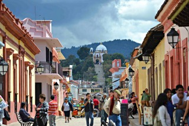
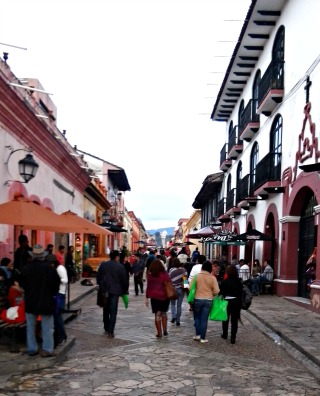
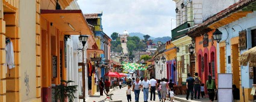
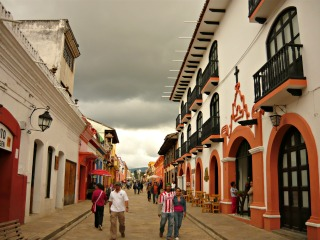
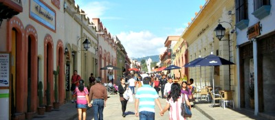

Es uno de los andadores más transitados de la ciudad, a lo largo de tres cuadras, operan más de 100 establecimientos comerciales como:
* cafeterías
* restaurantes
* bares
* y tiendas de diversos rubros.
El andador guadalupano se encuentra ubicado en la calle real de guadaupe de la ciudad de san cristobal de las casas.
Si usted se encuentra ubicado en la plaza de la paz viendo de frente hacia la catedral puede caminar hacia su derecha al finalizar la catedral, desplazándose despues a su izquierda pasando entre el costado de la catedral y la plaza 31 de Marzo.
Como referencia encontrará la farmacia del ahorro y Frente a este la zapateria pakar entre estos dos lugares encontrará el andador guadalupano que termina tres cuadras después.
En este lugar usted podra realizar actividades de esparcimiento y culturales como:
* Caminata
* Compra de Artesanias
* Fotografia
* Gastronomía
* Visitar Museos y Centros Culturales





posicione el mouse sobre las imágenes